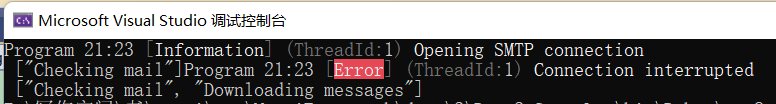
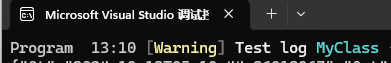
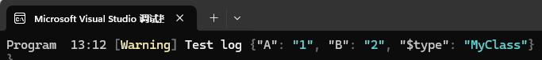
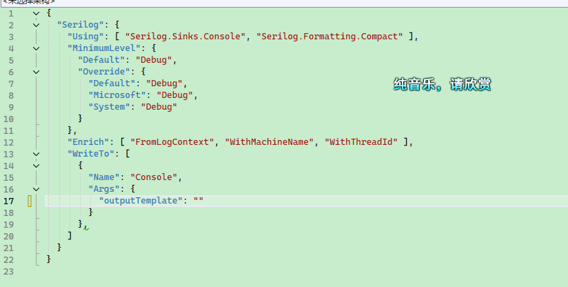
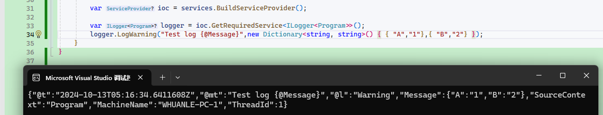
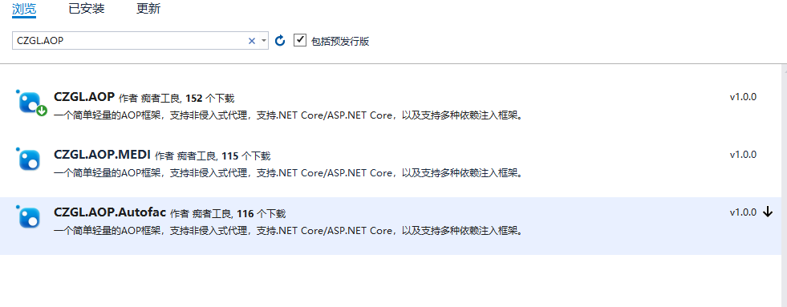

.NET 中的日志使用技巧
Serilog
Serilog 是 .NET 社区中使用最广泛的日志框架，所以笔者使用一个小节单独讲解使用方法。
示例项目在 Demo2.Console 中。
创建一个控制台程序，引入两个包：
Serilog.Sinks.Console
Serilog.Sinks.File
除此之外，还有
Serilog.Sinks.Elasticsearch、Serilog.Sinks.RabbitMQ等。Serilog 提供了用于将日志事件以各种格式写入存储的接收器。下面列出的许多接收器都是由更广泛的 Serilog 社区开发和支持的；https://github.com/serilog/serilog/wiki/Provided-Sinks
可以直接使用代码配置 Serilog：
private static Serilog.ILogger GetLogger()
{
const string LogTemplate = "{SourceContext} {Scope} {Timestamp:HH:mm} [{Level}] {Message:lj} {Properties:j} {NewLine}{Exception}";
var logger = new LoggerConfiguration()
.Enrich.WithMachineName()
.Enrich.WithThreadId()
.Enrich.FromLogContext()
#if DEBUG
.MinimumLevel.Debug()
#else
.MinimumLevel.Information()
#endif
.WriteTo.Console(outputTemplate: LogTemplate)
.WriteTo.File("log.txt", rollingInterval: RollingInterval.Day, outputTemplate: LogTemplate)
.CreateLogger();
return logger;
}
如果想从配置文件中加载，添加 Serilog.Settings.Configuration：
private static Serilog.ILogger GetJsonLogger()
{
IConfiguration configuration = new ConfigurationBuilder()
.SetBasePath(AppContext.BaseDirectory)
.AddJsonFile(path: "serilog.json", optional: true, reloadOnChange: true)
.Build();
if (configuration == null)
{
throw new ArgumentNullException($"未能找到 serilog.json 日志配置文件");
}
var logger = new LoggerConfiguration()
.ReadFrom.Configuration(configuration)
.CreateLogger();
return logger;
}
serilog.json 配置文件示例：
{
"Serilog": {
"Using": [ "Serilog.Sinks.Console", "Serilog.Sinks.File" ],
"MinimumLevel": {
"Default": "Debug"
},
"Enrich": [ "FromLogContext", "WithMachineName", "WithThreadId" ],
"WriteTo": [
{
"Name": "Console",
"Args": {
"outputTemplate": "{SourceContext} {Scope} {Timestamp:HH:mm} [{Level}] {Message:lj} {Properties:j} {NewLine}{Exception}"
}
},
{
"Name": "File",
"Args": {
"path": "logs/log-.txt",
"rollingInterval": "Day",
"outputTemplate": "{SourceContext} {Scope} {Timestamp:HH:mm} [{Level}] {Message:lj} {Properties:j} {NewLine}{Exception}"
}
}
]
}
}
依赖注入 Serilog。
引入 Serilog.Extensions.Logging 包。
private static Microsoft.Extensions.Logging.ILogger InjectLogger()
{
var logger = GetJsonLogger();
var ioc = new ServiceCollection();
ioc.AddLogging(builder => builder.AddSerilog(logger: logger, dispose: true));
var loggerProvider = ioc.BuildServiceProvider().GetRequiredService<ILoggerProvider>();
return loggerProvider.CreateLogger("Program");
}
最后，使用不同方式配置 Serilog 日志，然后启动程序打印日志。
static void Main()
{
var log1 = GetLogger();
log1.Debug("溪源More、痴者工良");
var log2 = GetJsonLogger();
log2.Debug("溪源More、痴者工良");
var log3 = InjectLogger();
log3.LogDebug("溪源More、痴者工良");
}
20:50 [Debug] 溪源More、痴者工良 {"MachineName": "WIN-KQDULADM5LA", "ThreadId": 1}
20:50 [Debug] 溪源More、痴者工良 {"MachineName": "WIN-KQDULADM5LA", "ThreadId": 1}
20:50 [Debug] 溪源More、痴者工良 {"MachineName": "WIN-KQDULADM5LA", "ThreadId": 1}
在 ASP.NET Core 中使用日志
示例项目在 Demo2.Api 中。
新建一个 ASP.NET Core API 新项目，引入 Serilog.AspNetCore 包。
在 Program 中添加代码注入 Serilog 。
var builder = WebApplication.CreateBuilder(args);
Log.Logger = new LoggerConfiguration()
.ReadFrom.Configuration(builder.Configuration)
.CreateLogger();
builder.Host.UseSerilog(Log.Logger);
//builder.Host.UseSerilog();
将前面示例中的 serilog.json 文件内容复制到 appsettings.json 中。
启动程序后，尝试访问 API 接口，会打印示例如下的日志：
Microsoft.AspNetCore.Hosting.Diagnostics 20:32 [Information] Request finished HTTP/1.1 GET http://localhost:5148/WeatherForecast - - - 200 - application/json;+charset=utf-8 1029.4319ms {"ElapsedMilliseconds": 1029.4319, "StatusCode": 200, "ContentType": "application/json; charset=utf-8", "ContentLength": null, "Protocol": "HTTP/1.1", "Method": "GET", "Scheme": "http", "Host": "localhost:5148", "PathBase": "", "Path": "/WeatherForecast", "QueryString": "", "EventId": {"Id": 2}, "RequestId": "0HMOONQO5ONKU:00000003", "RequestPath": "/WeatherForecast", "ConnectionId": "0HMOONQO5ONKU"}
如果需要为请求上下文添加一些属性信息，可以添加一个中间件，示例如下：
app.UseSerilogRequestLogging(options =>
{
options.EnrichDiagnosticContext = (diagnosticContext, httpContext) =>
{
diagnosticContext.Set("TraceId", httpContext.TraceIdentifier);
};
});
HTTP GET /WeatherForecast responded 200 in 181.9992 ms {"TraceId": "0HMSD1OUG2DHG:00000003" ... ...
对请求上下文添加属性信息，比如当前请求的用户信息，在本次请求作用域中使用日志打印信息时，日志会包含这些上下文信息，这对于分析日志还有帮助，可以很容易分析日志中那些条目是同一个上下文。在微服务场景下，会使用 ElasticSearch 等日志存储引擎查询分析日志，如果在日志中添加了相关的上下文属性，那么在分析日志时可以通过对应的属性查询出来，分析日志时可以帮助排除故障。
如果需要打印 http 的请求和响应日志，我们可以使用 ASP.NET Core 自带的 HttpLoggingMiddleware 中间件。
首先注入请求日志拦截服务。
builder.Services.AddHttpLogging(logging =>
{
logging.LoggingFields = HttpLoggingFields.All;
// 避免打印大量的请求和响应内容，只打印 4kb
logging.RequestBodyLogLimit = 4096;
logging.ResponseBodyLogLimit = 4096;
});
通过组合 HttpLoggingFields 枚举，可以配置中间件打印 Request、Query、HttpMethod、Header、Response 等信息。
可以将HttpLogging 中间件放在 Swagger、Static 之后，这样的话可以避免打印哪些用处不大的请求，只保留 API 请求相关的日志。
app.UseHttpLogging();
HttpLoggingMiddleware 中的日志模式是以 Information 级别打印的，在项目上线之后，如果每个请求都被打印信息的话，会降低系统性能，因此我们可以在配置文件中覆盖配置，避免打印普通的日志。
"Microsoft.AspNetCore.HttpLogging.HttpLoggingMiddleware": "Information"
上下文属性和作用域
示例项目在 Demo2.ScopeLog 中。
日志范围注意事项 Microsoft.Extensions.Logging.Abstractions 提供 BeginScopeAPI，可用于添加任意属性以记录特定代码区域内的事件。
解释其作用
API 有两种形式：
IDisposable BeginScope<TState>(TState state)
IDisposable BeginScope(this ILogger logger, string messageFormat, params object[] args)
使用如下的模板：
{SourceContext} {Timestamp:HH:mm} [{Level}] (ThreadId:{ThreadId}) {Message}{NewLine}{Exception} {Scope}
使用示例：
static void Main()
{
var logger = GetLogger();
using (logger.BeginScope("Checking mail"))
{
// Scope is "Checking mail"
logger.LogInformation("Opening SMTP connection");
using (logger.BeginScope("Downloading messages"))
{
// Scope is "Checking mail" -> "Downloading messages"
logger.LogError("Connection interrupted");
}
}
}

而在 Serilog 中，除了支持上述接口外，还通过 LogContext 提供了在日志中注入上下文属性的方法。其作用是添加属性之后，使得在其作用域之内打印日志时，日志会携带这些上下文属性信息。
using (LogContext.PushProperty("Test", 1))
{
// Process request; all logged events will carry `RequestId`
Log.Information("{Test} Adding {Item} to cart {CartId}", 1,1);
}
嵌套复杂一些：
using (LogContext.PushProperty("A", 1))
{
log.Information("Carries property A = 1");
using (LogContext.PushProperty("A", 2))
using (LogContext.PushProperty("B", 1))
{
log.Information("Carries A = 2 and B = 1");
}
log.Information("Carries property A = 1, again");
}
当需要设置大量属性时，下面的方式会比较麻烦；
using (LogContext.PushProperty("Test1", 1))
using (LogContext.PushProperty("Test2", 2))
{
}
例如在 ASP.NET Core 中间件中，我们可以批量添加：
public async Task InvokeAsync(HttpContext context, RequestDelegate next)
{
var enrichers = new List<ILogEventEnricher>();
if (!string.IsNullOrEmpty(correlationId))
{
enrichers.Add(new PropertyEnricher(_options.EnricherPropertyNames.CorrelationId, correlationId));
}
using (LogContext.Push(enrichers.ToArray()))
{
await next(context);
}
}
在业务系统中，可以通过在中间件获取 Token 中的用户信息，然后注入到日志上下文中，这样打印出来的日志，会携带用户信息。
格式化日志
引入 Serilog.Formatting.Compact 库。
本小节主要讲解三个知识点：
- 序列化类型
- 输入 JSON 格式日志
在打印日志是，我们往往想将一个对象打印到日志中，直接使用参数标识打印是不可行的：
logger.LogWarning("Test log {0}",new MyClass { A = "1",B = "2"});
打印结果：

在 Serilog.Formatting.Compact 包中提供了一种格式化对象打印到日志的功能，我们只需要在标识符位置加上 @ 即可。
logger.LogWarning("Test log {@Message}",new MyClass { A = "1",B = "2"});

对于字典类型也可以起效：
logger.LogWarning("Test log {@Message}",new Dictionary<string, string>() { { "A","1"},{ "B","2"} });
完整示例代码：
static void Main()
{
IConfiguration configuration = new ConfigurationBuilder()
.SetBasePath(AppContext.BaseDirectory)
.AddJsonFile(path: "serilog.json", optional: true, reloadOnChange: true)
.Build();
if (configuration == null)
{
throw new ArgumentNullException($"未能找到 serilog.json 日志配置文件");
}
var loggerBuilder = new LoggerConfiguration()
.ReadFrom.Configuration(configuration)
.WriteTo.Console(new CompactJsonFormatter())
.CreateLogger();
var services = new ServiceCollection();
services.AddLogging(s =>
{
s.AddSerilog(loggerBuilder);
});
var ioc = services.BuildServiceProvider();
var logger = ioc.GetRequiredService<ILogger<Program>>();
logger.LogWarning("Test log {@Message}", new Dictionary<string, string>() { { "A", "1" }, { "B", "2" } });
}
不够，这样一行或多行的数据对应微服务基础设施的日志收集来说，非常不方便，我们需要将日志自动生成 json 格式打印到控制台中，有 ELK 等日志系统自动收集。
这样搞其实也很简单，只需要去掉默认的日志模板即可：


在 ES 系统中，每个字段都将会被自动索引，我们可以在日志系统中方便处理各个字段的值。
要想自定义格式化日志也很简单，例如我们要在现在的 json 日志中，前后加上 []：
public class MyTextFormatter : ITextFormatter
{
private readonly JsonValueFormatter _valueFormatter;
public MyTextFormatter(JsonValueFormatter? valueFormatter = null)
{
_valueFormatter = valueFormatter ?? new JsonValueFormatter("$type");
}
/// <inheritdoc/>
public void Format(LogEvent logEvent, TextWriter output)
{
output.Write('[');
CompactJsonFormatter.FormatEvent(logEvent, output, _valueFormatter);
output.Write(']');
output.WriteLine();
}
}
非侵入式日志
非侵入式的日志有多种方法，比如 ASP.NET Core 中间件管道，或者使用 AOP 框架。
这里可以使用笔者开源的 CZGL.AOP 框架，Nuget 中可以搜索到。

示例项目在 Demo2.AopLog 中。
有一个类型，我们需要在执行 SayHello 之前和之后打印日志，将参数和返回值记录下来。
public class Hello
{
public virtual string SayHello(string content)
{
var str = $"Hello,{content}";
return str;
}
}
编写统一的切入代码，这些代码将在函数被调用时执行。
Before 会在被代理的方法执行前或被代理的属性调用时生效，你可以通过 AspectContext 上下文，获取、修改传递的参数。
After 在方法执行后或属性调用时生效，你可以通过上下文获取、修改返回值。
public class LogAttribute : ActionAttribute
{
public override void Before(AspectContext context)
{
Console.WriteLine($"{context.MethodInfo.Name} 函数被执行前");
foreach (var item in context.MethodValues)
Console.WriteLine(item.ToString());
}
public override object After(AspectContext context)
{
Console.WriteLine($"{context.MethodInfo.Name} 函数被执行后");
Console.WriteLine(context.MethodResult.ToString());
return context.MethodResult;
}
}
改造 Hello 类，代码如下：
[Interceptor]
public class Hello
{
[Log]
public virtual string SayHello(string content)
{
var str = $"Hello,{content}";
return str;
}
}
然后创建代理类型：
static void Main(string[] args)
{
Hello hello = AopInterceptor.CreateProxyOfClass<Hello>();
hello.SayHello("any one");
Console.Read();
}
启动程序，会输出：
SayHello 函数被执行前
any one
SayHello 函数被执行后
Hello,any one
你完全不需要担心 AOP 框架会给你的程序带来性能问题，因为 CZGL.AOP 框架采用 EMIT 编写，并且自带缓存，当一个类型被代理过，之后无需重复生成。
CZGL.AOP 可以通过 .NET Core 自带的依赖注入框架和 Autofac 结合使用，自动代理 CI 容器中的服务。这样不需要 AopInterceptor.CreateProxyOfClass 手动调用代理接口。
CZGL.AOP 代码是开源的，可以参考笔者另一篇博文：